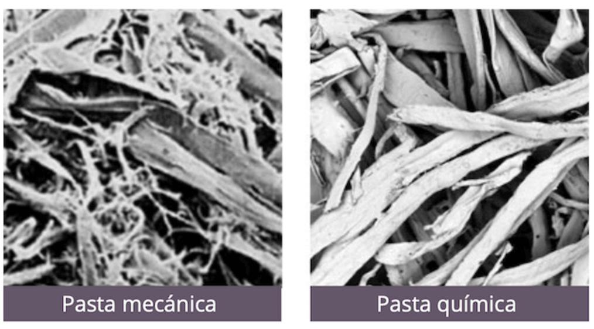

Se obtiene por procesos fisicos, conservando la mayor parte de la madera. Tiene alto rendimiento pero menor resistencia.
Usa quimicos para eliminar lignina, logrando fibras mas limpias, resistentes y de mejor calidad.